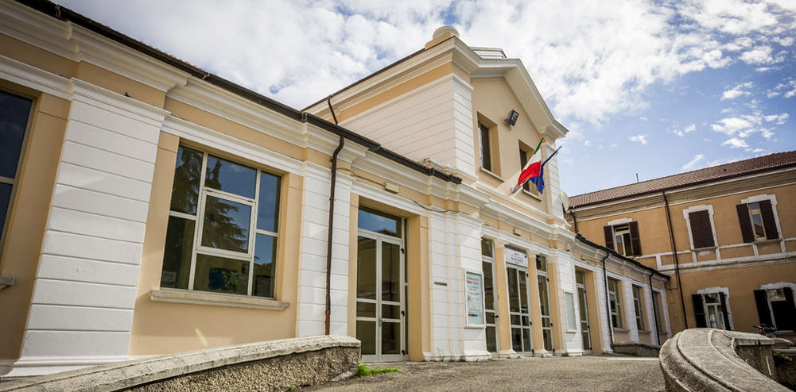

Frequento la 4^H dell'ITT Blaise Pascal, qui in seguito il mio orario scolastico:
| Lunedì | Martedì | Mercoledì | Giovedì | Venerdì | Sabato |
|---|---|---|---|---|---|
| TP-SIT LUCCHI MATTEO LOMBARDI NEVIO |
TELECOMUNICAZIONI NUCCI SIMONE TONINI TIZIANO |
LETTERE ZAMPIGA MONICA |
STORIA ZAMPIGA MONICA |
LETTERE ZAMPIGA MONICA |
|
| TP-SIT LUCCHI MATTEO LOMBARDI NEVIO |
TELECOMUNICAZIONI NUCCI SIMONE TONINI TIZIANO |
LETTERE ZAMPIGA MONICA |
STORIA ZAMPIGA MONICA |
INFORMATICA MOLARA FEDERICO LOMBARDI NEVIO |
SR VENETI DAVID BRIGHI ALBERTO |
| SR VENETI DAVID |
MATEMATICA GRADARA SARA |
MATEMATICA GRADARA SARA |
SPORT ZOFFOLI LORENZO |
INFORMATICA MOLARA FEDERICO LOMBARDI NEVIO |
SR VENETI DAVID BRIGHI ALBERTO |
| TELECOMUNICAZIONI NUCCI SIMONE |
INFORMATICA MOLARA FEDERICO LOMBARDI NEVIO |
INFORMATICA MOLARA FEDERICO |
SPORT ZOFFOLI LORENZO |
INGLESE ABBONDANZA NICOLETTA |
INFORMATICA MOLARA FEDERICO |
| MATEMATICA GRADARA SARA |
INGLESE ABBONDANZA NICOLETTA |
INFORMATICA MOLARA FEDERICO |
INGLESE ABBONDANZA NICOLETTA |
LETTERE ZAMPIGA MONICA |
TP-SIT LUCCHI MATTEO |
| SR VENETI DAVID |
MATEMATICA GRADARA SARA |
L'ITT Blaise Pascal è un'Istituto Tecnico Tecnologico, ha 3 principali indirizzi: Informatica,
Automazione e Biotecnologie.

Io Frequento l'indirizzo di Informatica e Telecomunicazioni.
Le materie di indirizzo sono: